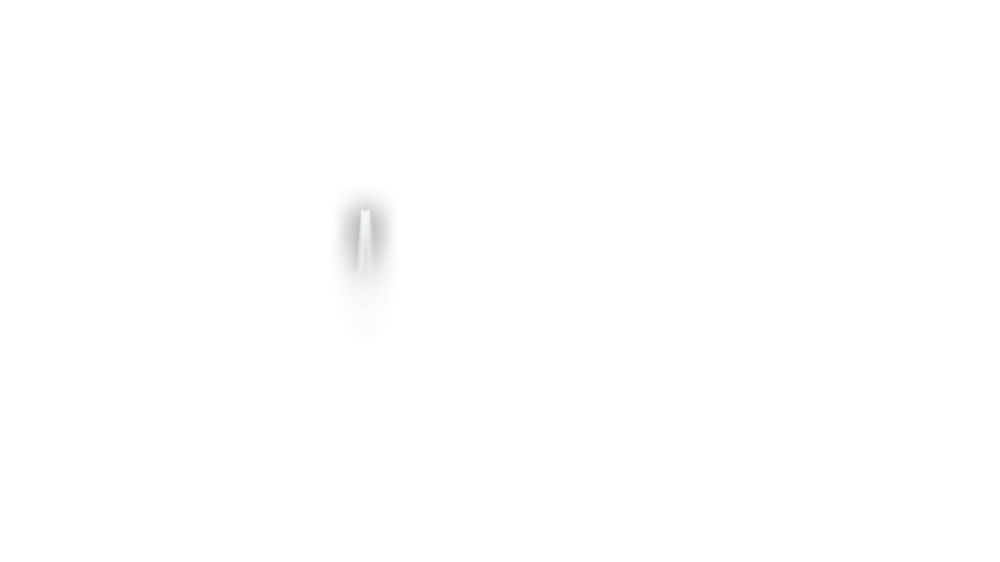

hobby blog
Alien Hobby
Chronicles



about us
Hi, I'm Ishita Singh! I've always been fascinated by the mysteries of the universe, and my favorite topic to explore is aliens. There's something so exciting about imagining what life might be like beyond Earth—what kind of creatures exist, how they communicate, and whether they've already visited us.
For me, learning about aliens is more than just an interest; it's a hobby that fuels my creativity.
I love sketching out what I think alien species might look like, writing stories that take place in far-off galaxies, and diving into documentaries or books about UFO sightings and extraterrestrial theories.
Working on this blog is a dream come true because it lets me combine my love for creativity and my passion for aliens. It's amazing to share this journey and connect with others who are just as intrigued by the unknown as I am!

about Us
Hi, I'm Atharv Soni! I've always been captivated by the mysteries of the universe, with aliens being my favorite subject to explore. There's something truly thrilling about pondering the existence of extraterrestrial life—what they might look like, how they live, and whether they've already made contact with us.
I enjoy diving into theories about alien civilizations, writing about the latest UFO sightings, and exploring scientific research on the possibilities of life beyond Earth. Each discovery feels like a step closer to unraveling the cosmic unknown.
Creating this blog is an exciting way for me to channel my creativity and share my fascination with aliens. It's a space where I can connect with others who share my enthusiasm and explore the endless possibilities of what might be out there in the vastness of the cosmos!
Welcome to our Hobby Blog
Why Aliens? Ever since we looked up at the night sky, we’ve been fascinated by the idea of life beyond Earth. Are we truly alone in the universe, or is there something—or someone—out there, waiting to be discovered? The curiosity and mystery surrounding aliens make it a captivating hobby that fuels our imagination and keeps us searching for answers. A Hobby That Inspires Wonder Aliens as a hobby is not just about science or fiction; it’s about wonder, creativity, and asking big questions. Whether you’re curious about NASA discoveries, love science fiction movies, or enjoy hearing stories about UFO sightings, this blog is for you!
Extra-terrestrials
The universe is vast, mysterious, and full of wonders,
leading us to the question—are we alone? Aliens, or extraterrestrial beings,
have fascinated humans for centuries. From ancient stories of celestial visitors to modern UFO sightings,
the idea of life beyond Earth sparks curiosity and imagination.
Whether it’s the famous Roswell Incident,
mysterious signals like the Wow! Signal,
or movies and books that depict alien worlds,
the topic continues to inspire us. With countless galaxies,
stars, and planets, the possibilities are endless. Who knows—maybe one day,
we’ll find our answer among the stars.
There is a complete film based on this, you can have a glimpse here:
Our Research

Over the past decade, more than 2,300 verified sightings of Unexplained Aerial Phenomena (UAPs) have been reported across the globe. Independent research teams have collected high-resolution radar data showing that 83% of these objects were moving at speeds and making maneuvers beyond the capabilities of any known human-made technology.
Learn more
In 2020, a collection of declassified military reports from the US, Russia, and the UK revealed over 600 incidents where pilots encountered unidentified flying objects during routine missions. In many cases, these objects were capable of disappearing from radar systems and showed no visible means of propulsion.
Learn moreA 15-year study of crop circles conducted by agricultural scientists has revealed trace amounts of unknown biological material. Over 75% of crop circles studied contained microscopic elements that do not match any known organic material on Earth. The circles also showed magnetic anomalies not present in the surrounding fields.
Learn more
acknowledgements
We sincerely thank you for taking the time to explore our project on alien hobbies. This journey has been an exciting opportunity to dive deep into the fascinating world of extraterrestrial possibilities and share our passion with you.
As part of our passion for extraterrestrial life, we recently visited the Kesariwada Jyotirvidya Observatory, where we had the chance to observe different planets and expand our understanding of the universe. This experience has further fueled our enthusiasm for exploring the mysteries of space.
Finally, we want to thank you—our audience—for your curiosity and interest in the mysteries of the universe. Your engagement inspires us to continue exploring, learning, and imagining the infinite possibilities of life beyond Earth.